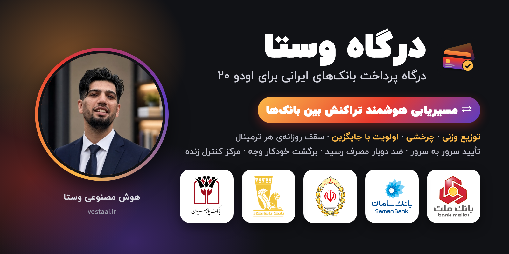
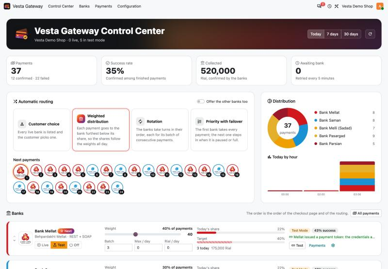
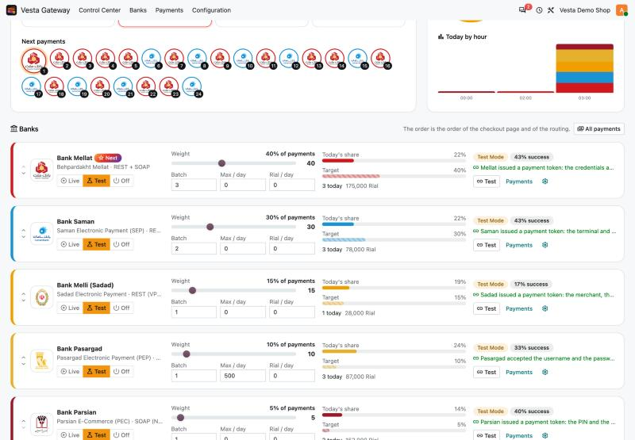
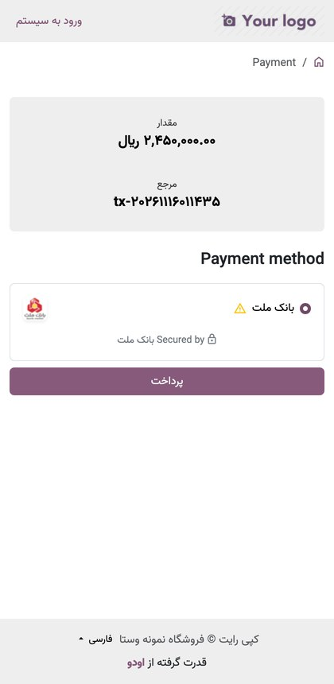
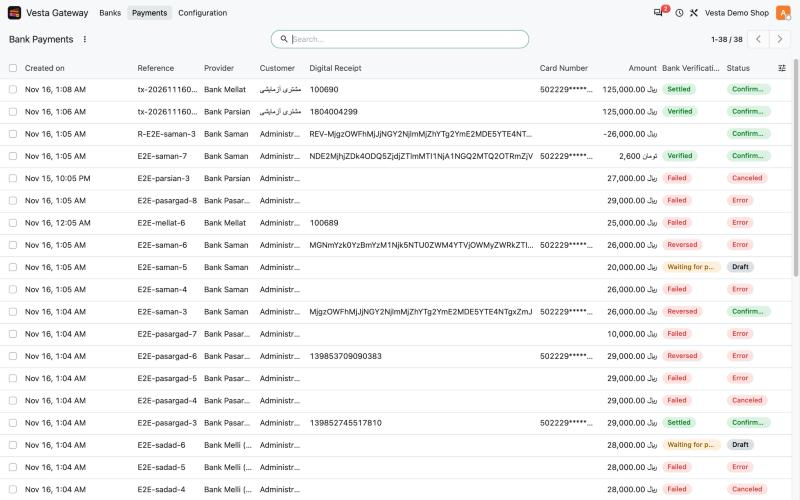

ملت، سامان، ملی (سداد)، پاسارگاد و پارسیان روی یک هستهی امن، با یک داشبورد برای نصب، آزمایش، روشن و خاموش کردن و پایش همهی بانکها. هر پرداخت سرور به سرور با بانک تأیید میشود و اگر مبلغ یا رسید درست نباشد، پول خودکار به کارت مشتری برمیگردد.
برای هر پرداخت، درگاه وستا بانک مناسب را خودکار انتخاب میکند؛ طبق قانونی که شما در مرکز کنترل تعیین میکنید.
سقف روزانهی تعداد و مبلغ برای هر ترمینال · کنار گذاشتن خودکار بانک ناسالم · پیشنمایش ۲۴ پرداخت بعدی · سهم واقعی در برابر سهم هدف · نمودار توزیع




| Bank | Switch | API | Refund from Odoo | Module |
|---|---|---|---|---|
| Bank Mellat | Behpardakht Mellat | REST + SOAP | — | vesta_payment_mellat (open source) |
| Bank Saman | Saman Electronic Payment (SEP) | REST, OnlinePG 3.3 | ✔ (50 minutes) | vesta_payment_saman (Pro) |
| Bank Melli | Sadad | REST, VPG v0, TripleDES | — | vesta_payment_sadad (Pro) |
| Bank Pasargad | Pasargad Electronic Payment (PEP) | REST, Persa switch v13, JWT | ✔ | vesta_payment_pasargad (Pro) |
| Bank Parsian | Parsian E-Commerce (PEC) | SOAP, NewIPG | ✔ | vesta_payment_parsian (Pro) |
Smart routing between banks: customer choice, weighted distribution, rotation in batches or priority with failover, with daily caps per terminal, automatic pause of a failing bank and a preview of the next payments, all from the control center.
Customers pick their bank on the website, customer portal or invoice payment link, pay on the bank's secure page and come back. Vesta Gateway confirms every payment server-to-server, checks the amount against the order, binds each bank receipt to a single order (double-spending protection) and reverses the money automatically when anything is off. A dashboard lists every bank with live, test and disabled toggles, a connection test that moves no money, and 30-day statistics.
Documentation: activation guide · security · integration details.